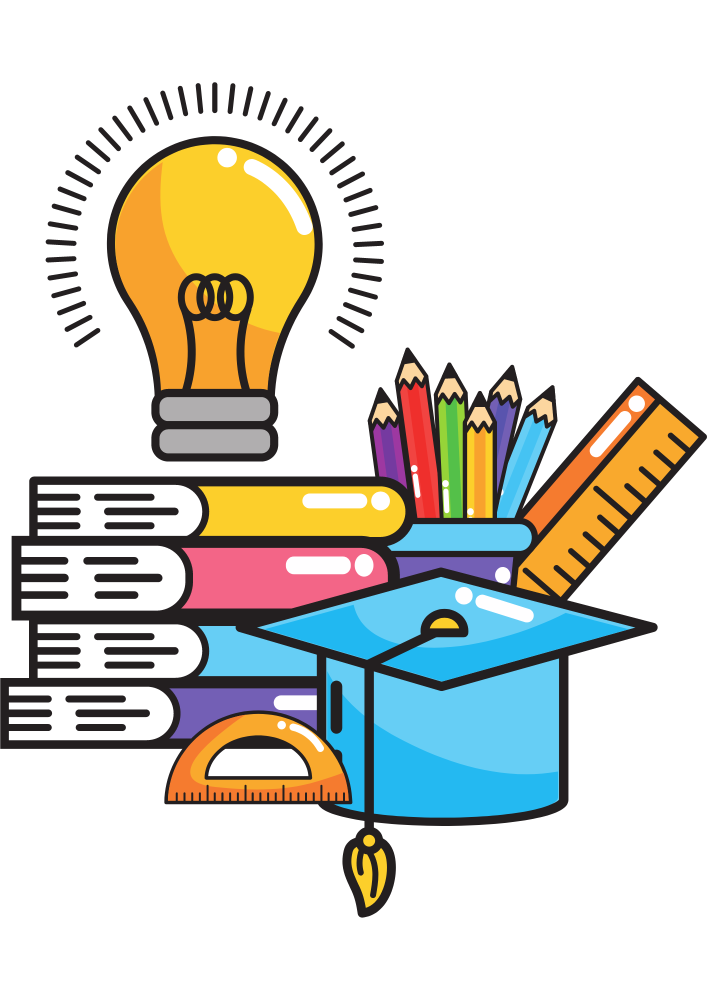

Study Skills
Time Management
- Make a weekly or daily to-do list
- Use a calendar or planner
- Get up early to get stuff done
- Reward yourself when tasks are complete
- Schedule your “me” time (so it doesn’t eat up study time)
- Read the syllabus and make plans from it
- Prioritize and schedule what you need to do – be realistic!
- Set aside study/class work hours each day
- Have a spot where all studying takes place
- Make or join a study group
Note-Taking
- Copy professor board notes and check Moodle
- Paraphrase professor’s words
- Take up as much space as needed
- Review your notes every night
- Create your own abbreviations
- Jot down any ideas that the professor repeats
- Notice verbal cues – “Now this is important”
- Highlight your book/class materials
- Write down all examples
- Rewrite your notes after class
